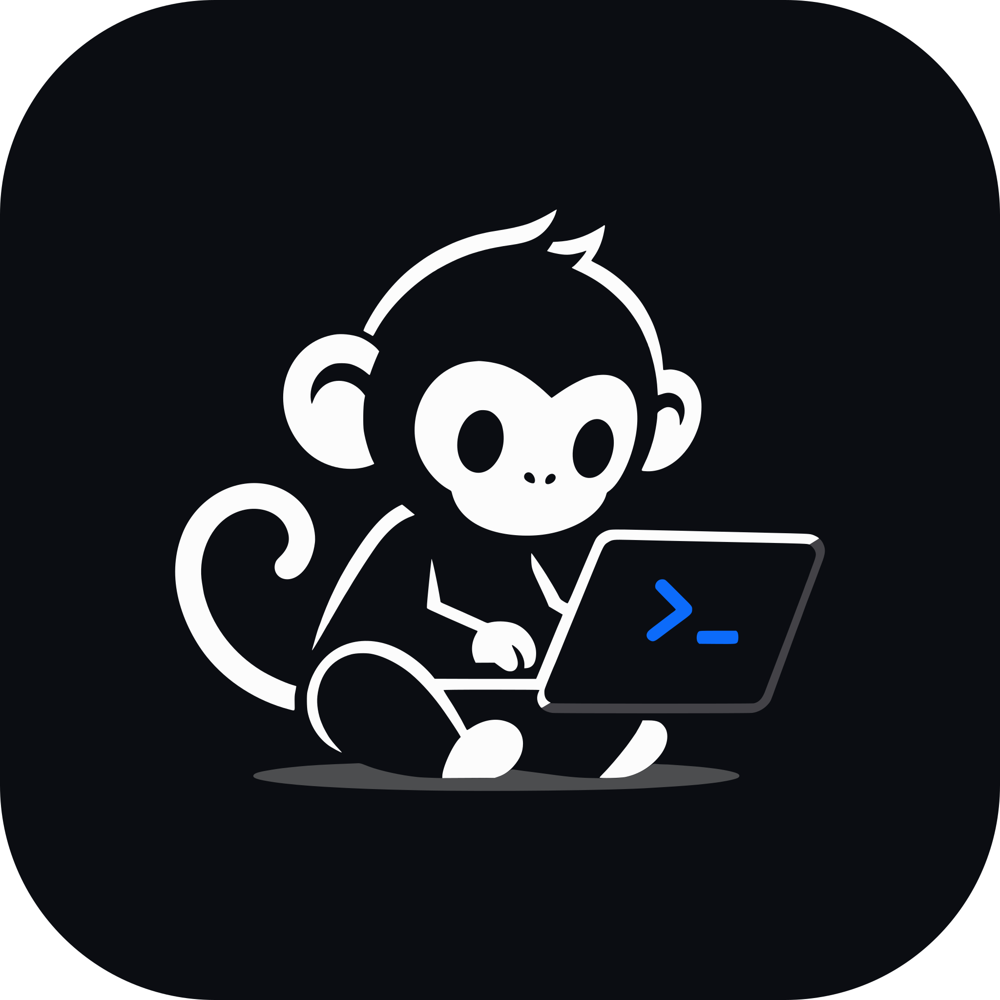

Distribución Linux basada en Arch, enfocada en programación y desarrollo de software.
Arch LinuxKDE Plasma 6 · WaylandLive USB + instaladormonOS entrega un entorno de desarrollo completo y listo desde el primer arranque: se prueba desde una USB sin instalar nada, se instala con un asistente gráfico y queda configurado con herramientas, temas y optimizaciones pensadas para programar, sin horas de configuración manual. Mantiene la base rolling de Arch (software siempre actualizado y acceso al AUR) y le agrega una identidad visual propia: monos, galaxias y tecnología.
Se prueba el sistema completo desde la USB y se instala con Calamares, al estilo de Fedora. El usuario se crea durante la instalación.
Detecta GPU NVIDIA, CPU Intel y máquinas virtuales, y conserva solo los drivers y servicios que el equipo necesita.
Subvolúmenes separados, snapshots automáticos con Snapper antes de cada actualización y arranque de snapshots desde GRUB.
Kernel linux por defecto y linux-lts como respaldo seleccionable en GRUB.
Lenguajes, compiladores, servidores de lenguaje, Docker, Podman y distrobox instalados y configurados desde el primer arranque.
OpenCode, Gemini CLI, Codex, Ollama y Zed marcados por defecto en el instalador; Claude Code, Google Antigravity y herdr como opción.
17 grupos opcionales que se descargan durante la instalación: IA, móvil, JVM, ciencia de datos, embebidos, juegos, DevOps, bases de datos y más.
Paquetes del AUR ya compilados y publicados en GitHub: se instalan con pacman sin compilar nada. Además, yay opcional para todo el AUR.
Ventanas en mosaico con Krohnkite, activables y desactivables con Meta+Shift+T.
zram, arranque más rápido, mirrors actualizados semanalmente (reflector), descargas paralelas en pacman y firewall activo.
Flatpak y Discover con Flathub para instalar apps gráficas sin tocar la terminal.
KDE Connect con los puertos del firewall ya abiertos.
Una sola paleta de marca genera automáticamente los colores de todo el sistema, del arranque al editor.
Dos temas globales de Plasma: monOS y monOS Light.
Barra superior flotante con islas redondeadas (lanzador, escritorios virtuales en forma de píldora, título de ventana, reloj, CPU/RAM y bandeja) y dock inferior que se oculta al acercar una ventana.
Tema propio en GRUB, Plymouth (pantalla de carga) y SDDM (inicio de sesión).
Klassy para estilo y decoraciones, íconos monocromáticos Yamis y cursor Bibata.
Orbit, Nebula, Daylight, Astronaut (claro/oscuro), Morning, Focus, Sketch, Spacewalk, Evolution, Matrix y Blueprint.
kitty, foot, Neovim, Vim, Helix, VS Code, Obsidian, btop, yazi, lazygit, zellij, bat, starship y fastfetch con los colores de monOS. Fuente JetBrains Mono Nerd Font.
Se elige durante la instalación y se descarga en ese momento (requiere internet), por lo que no ocupa espacio en la ISO. Los marcados con * vienen del repositorio propio de monOS.